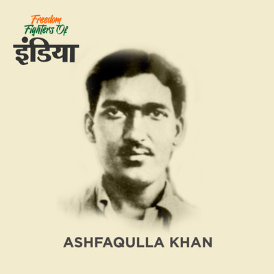

Ashfaqulla Khan

Born: 22 October 1900, Shahjahanpur
Died: 19 December 1927, Faizabad
Organization: Hindustan Socialist Republican Association
Famously Known As:Ashfaq Ulla Khan
Born on 22nd October 1900, in the district of Shahjahanpur, Uttar Pradesh, Ashfaqulla Khan
grew up with the non-cooperation movement going on at the forefront, led by Mahatma Gandhi.
Just when he was a young gentleman, Ashfaqulla Khan became acquainted with Ram Prasad
Bismil. He was one of the main conspirators in the Chauri Chaura incident, which took place in
Gorakhpur. He was a strong advocate of independence and wanted the British to leave India at
any cost. Ashfaqulla Khan was a popular freedom fighter, known for his true friendship with
Bismil, was sentenced to death for the Kakori train robbery. It was popularly known as the
Kakori Conspiracy of 1925.
Ashfaqulla Khan (22nd October, 1900 - 19th December, 1927)
Ashfaqulla Khan was born in Shahjahanpur, North-Western Province, British India in a Muslims Pathan family of Khyber tribe.
In 1924, Ashfaqulla Khan formed an organization with like-minded freedom fighters which was named Hindustan Republican Association.
This association's purpose was to organize armed revolutions to achieve a free India.
To give a boost to their movement and buy arms and ammunition to carry out their activities, the revolutionaries of HSRA,
including Ram Prasad Bismil, looted the train carrying British government money in Kakori near Lucknow on 9 August, 1925.
Bismil was caught by the police and Ashfaqulla Khan was the only one untraced by the police. He went into
hiding and moved to Banaras from Bihar, where he worked in an engineering company for 10 months.
Later, he went to Delhi to find out ways to move out of the country. He took the help of one of his Pathan friends
who also was his classmate in the past. This friend, in turn, betrayed him by informing the police about his where about sand on
the morning of 17 July, 1926, police came to his house and arrested him.
The case for the Kakori dacoity was concluded by awarding death sentence to Bismil, Ashfaqulla Khan and few others.
Ashfaqulla Khan was put to death by hanging on 19 December, 1927, at Faizabad jail. This revolutionary man became a martyr and a
legend among his people due to his love for the motherland, his clear thinking, unshakeable courage, firmness and loyalty.